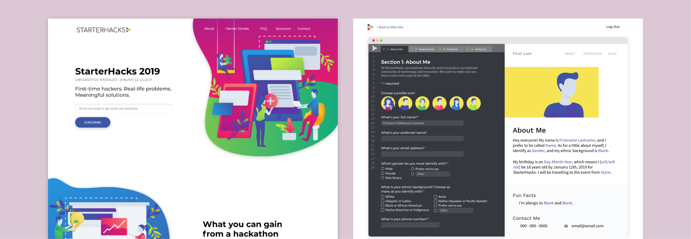

StarterHacks is Canada’s biggest beginner-focused hackathon. Founded in 2017, I had the opportunity to attend the first ever StarterHacks as a hacker. In 2018, I joined the organizing team as a tech/design liaison, and continued my journey with StarterHacks this year.
I had the opportunity to work with some really talented people, including Grace Ma, Yifei Ren, Betty Lam and Halina Brookson
Check out the final product here!
The purpose of the site was to provide information for not only stakeholders such as sponsors and partners, but also for the general public, particularly high school and university students interested in attending StarterHacks.
For this year, we decided to go a more organic and less geometric look compared from last year, since harsh lines and pointy corners aren’t as welcoming. In this year’s redesign, we used more organic “blobby” shapes and rounded all our corners, used more gradients as opposed to solids to show progression, and added drop shadows to add the illusion of layers. We also created our own fun vector illustration styles to bring back the human side of tech.
As the tech and design liaison, I was the first point of contact between the design and dev team. I performed design reviews, answered any design-related questions from developers, and assisted with styling the site. As a designer, I also contributed in designing the website, starting from wireframes to high-fidelity mockups.
Following this project, I also helped kicked off the establishment of StarterHacks’ dev and design project guidelines to streamline the handoff process from designers to developers. The biggest change for the team was improving our design process so that it would align with the tools that the developers were using to create the site. The dev team had been using Bootstrap to make the site responsive, however we hadn’t designed with the grid system in mind. As the tech and design liaison, I created guides on Figma for the design team to follow according to Bootstrap’s responsive layouts.
This was the form that hackers filled out to apply to hack at StarterHacks. The main theme was a “code/build your own website” theme, inspired by the vector graphics on our main site.
For this project, my main responsibility was the “console side”, where hackers would enter in their details. This project taught me a lot about form design, especially how to make long forms feel less tedious for users.